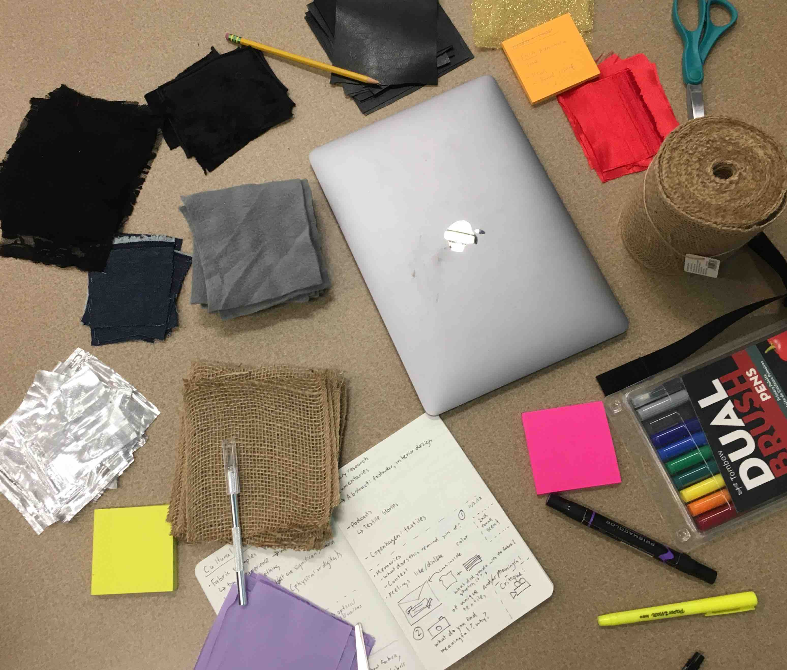
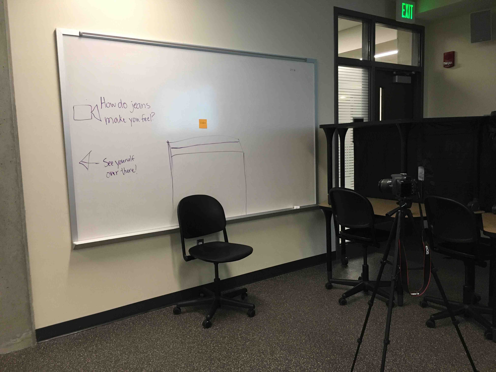

A Day at the Jean Museum
Team
4 students
Project
6 weeks UX studio project to design a museum experience with technologically rich touchpoints
My Role
Researched 4 museum experiences Sketched layout and touchpoints Created cultural probes Prototyped digital touchpoints in low and high fidelity Tested a physical prototype through bodystormingCreated an exhibit concept video
Intro
Our project brief was to design a museum exhibit with technologically rich touchpoints. These touchpoints are intended to connect to each other so that visitors can follow a cohesive narrative. We created a museum exhibit on how the counterculture era changed Levi’s jeans from work attire to fashion icon.
To explain what the exhibit intends to educate visitors on, we established two learning outcomes:
- Visitors will have a comprehensive understanding of how counterculture changed the purpose of Levi’s jeans from work to fashion.
- Visitors can compare differences in jeans pre-counterculture and connect it to modern day jeans.
Research
Our first goal for research was to learn how museums combine media to create interactive touchpoints, find examples of multi-sensory experiences for inspiration, and understand how space affects flow.
To do this, we analyzed museum visits and a store visit. We looked at six different places and took away something unique from each.
Cooper Hewitt Design Museum
The Cooper Hewitt features an interactive table upon which visitors can create 3D models. Right off the bat, this set a playful, creative, and interactive tone. This was our main inspiration later on when we integrating a virtual DIY Jeans interactive table.
Indianapolis Childrens' Museum
From a visit to the Indianapolis Children’s Museum, we looked at different touchpoints to understand how they connected to create an immersive experience. This was important for us to learn because we realized that touchpoints can’t stand alone, but rather have to work together.
Rodin Museum
The Rodin Museum was one of our inspirations for an open layout. In this museum, sculptures are spread out across the property, which fosters a sense of exploration. As a result, we iterated upon our divided room layout, which disjointedly segmented touchpoints, into an open layout that encouraged visitors to explore.
Space Needle
In Seattle, the Space Needle has an app that uses augmented reality to create virtual animations that can be added to pictures. This inspired a smart mirror in which visitors could overlay jeans onto themselves.
Blink Cincinnati
Blink Cincinnati is an annual outdoor interactive art festival. Each touchpoint is spread out around the city. As each touchpoint was interactive, they became engaging because visitors felt like they were contributing to the art. One salient example was participants would record a video that was then projected on a large wall and set to music for the audience. We wanted our visitors to feel like that they were not only learning but also leaving a part of themselves. This inspired our touchpoint where visitors record a video about how jeans fit into their lives, which is then projected for other visitors.
We also visited the Levi’s store to learn about their aesthetic and style standards.
Our museum research allowed us to gain an in-depth understanding of how exhibits are structured, but we lacked knowledge about our users. To fill in this gap, our next steps were to use cultural probes, interviews, and secondary research.
Cultural Probes
We used cultural probes, guided activities users can do on their own time, to elicit more natural and personal responses than an interview. Our goal for cultural probes was to understand patrons’ lived experiences in relation to jeans prior to visiting the museum. The probes had three activities:
- Interaction with a fabric sample We gave participants some denim fabric to feel and play with
- Brief explanation of knowledge on jeans To understand what a participant would know before coming to the museum, we wanted to understand users' basic knowledge
- Picture of the participant wearing jeans This activity connected to the personal experience of relating the content to the user's lived experience
We learned that participants were inclined to interact with the fabric (stretching and twisting it, feeling the texture), had basic prior knowledge about jeans but knew little beyond one or two facts, and used jeans in a variety of different contexts including casual and professional wear. This helped us understand the role of denim and jeans in their lives. Combined with the interviews, the probes helped us understand who we were designing for.
Interviews
We conducted interviews to understand why people go to museums, who they go with, and what makes an experience enjoyable. We had three key takeaways:
These takeaways influenced our museum to become much more interactive rather than purely informative and didactic.
Other Research
One of our most important takeaway from our secondary research came from Dale’s cone of experience. We learned that doing is more effective than seeing or hearing: patrons remember 90% of what they do. This further incentivized us to make our exhibit as interactive as possible.
Ideation
As we conducted research, we began ideating our exhibit. Our museum exhibit evolved to become 6 distinct touchpoints.
Space & Layout
As Ellen Lupton, curator of the Cooper Hewitt Design Museum, writes in her book Design is Storytelling, the physical layout of an exhibition can set the tone and guide the story a user perceives. We wanted to create an open layout that encourages a sense of exploration. We also created dividing walls that visitors could partially see over or through to encourage curiosity and guide users through the museum.
Counterculture Video
A hallway guides visitors from the entrance to the first touchpoint - a video introducing counterculture and the history of Levi’s to visitors when they enter. This sets the context and tone for the museum.
Jeans Racks
In the center of the room, glass walls surround racks of jeans. The glass walls are intended to separate the racks, but encourage the users to approach and physically interact with the jeans. Visitors can touch replicas of jeans from different eras to understand the evolution. Tags on the jeans explain facts about how the pair of jeans relates to history and pop culture.
Artifacts Wall + Video Tour
Visitors can see different artifacts such as buttons and tags from different historical eras while listening to an audio tour.
After testing, this was later changed to an interactive photo wall. The photo wall showcases iconic jeans throughout history that participants can click on to learn more about.
Video Message
Visitors can record a video about their “Jeans Story,” which will then be projected onto a wall in the room. This playful interaction is intended to engage visitors on a more emotional level by connecting it to their personal experience.
Design Your Own Jeans

Visitors can design their own jeans at an interactive table by mix and matching elements like stitching and style from different eras to create a personalized pair of jeans. In a future iteration, the photo wall allows them to virtually try on their jeans.
Testing
Paper and screens have their limits. We created a physical prototype of the exhibit to understand how engaging the different touchpoints were, how visitors felt the flow and space affected their experience, and find ways we could improve the exhibit. This method is called bodystorming, and it places participants in a more contextual environment.
We tested 7 different participants, and found four key takeaways:
- Participants enjoyed the open layout and flow, and appreciated being able to explore.
- Participants responded well to the video recording component. They found it particularly engaging and playful to leave a memory of themselves in the museum.
- Having facts on the tags of the jeans patrons could interact with would have increased motivation to explore the racks.
- Participants were unsure of how the artifacts wall connected to the rest of the museum.
The results were consistent with our museum visit research, and helped us identify areas to iterate on and improve. Based on the results, we added tags to the jeans on the racks, changed the artifacts wall to an interactive photo wall of iconic jeans from the counterculture era, and polished the interactive table prototype.
Conclusion
Creating an interactive museum experience was an adventure in itself. Through the process of research and design, we created digital touchpoints that connect to tell an emotionally engaging experience that teaches visitors about jeans in context of history of pop culture.
Our next steps would to focus on the micro-interactions in the museum and conduct future testing + iteration on our digital artifacts. This would help us improve the user interfaces, especially adapting the photo wall to take into account the size in relation. Additionally, we would like to conduct more historical research to more accurately depict content in the museum.
Reflection
This was one of my favorite projects I have ever worked on. It encouraged me to be much more creative because we were working in a physical space, thus had to consider what it’s like to interact with technology. Making jeans, an everyday object, into the subject of a museum was a fascinating challenge. It was also incredible to see the museum come to life through our bodystorming and seeing participants interact with the space.